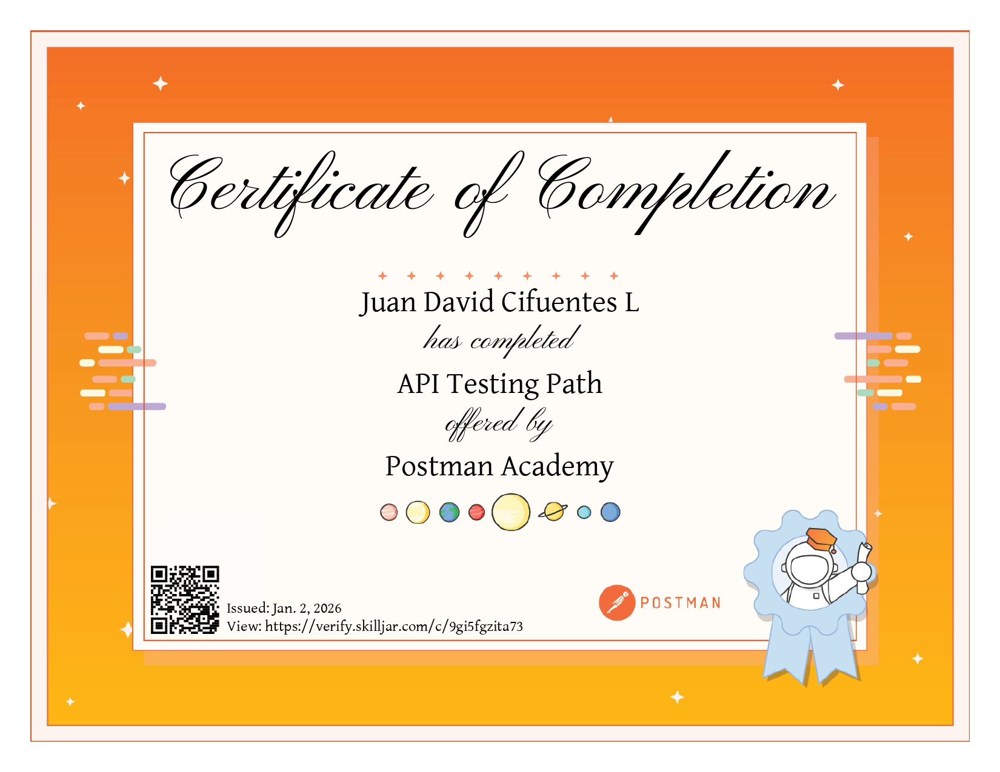

Curso API Testing Path - Postman Academy
Completado en enero 2026. Este curso ofrecido por Postman Academy ha proporcionado una comprensión profunda y aplicada de los principios y prácticas de testing de APIs. Por medio del abarque de los siguientes temas:
- Fundamentos de APIs REST y arquitectura cliente-servidor.
- Uso de Postman para la creación y ejecución de colecciones de pruebas.
- Diseño de casos de prueba para validar endpoints, métodos HTTP, parámetros y códigos de estado.
- Manejo de variables, entornos y autenticación (tokens, API keys).
- Interpretación de respuestas JSON y verificación de estructuras de datos.
Esta certificación fortaleció mis habilidades en aseguramiento de calidad (QA), validación de servicios web y pruebas orientadas a integración de sistemas, aportando una base sólida para proyectos que involucren microservicios y arquitecturas basadas en APIs.
Certificado Obtenido
